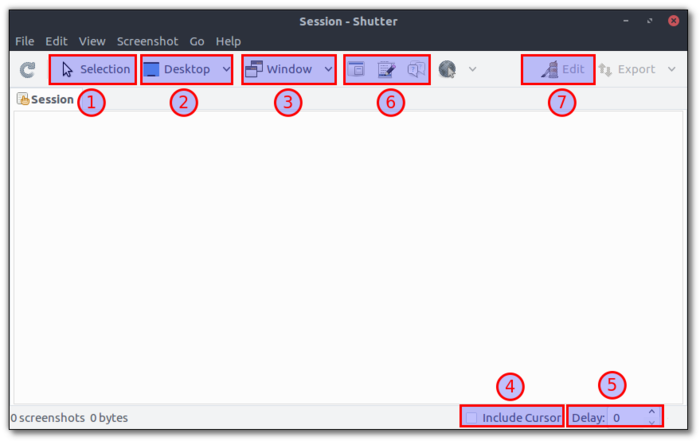
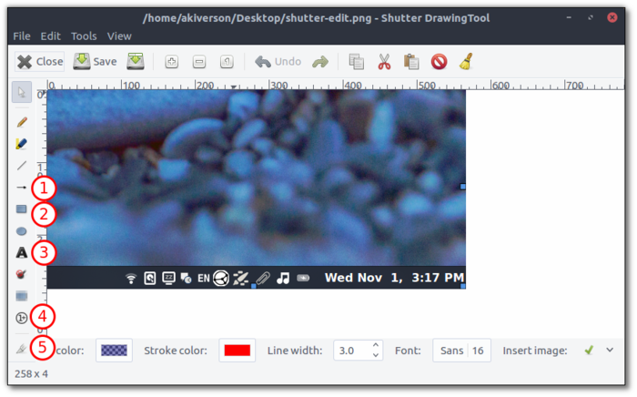
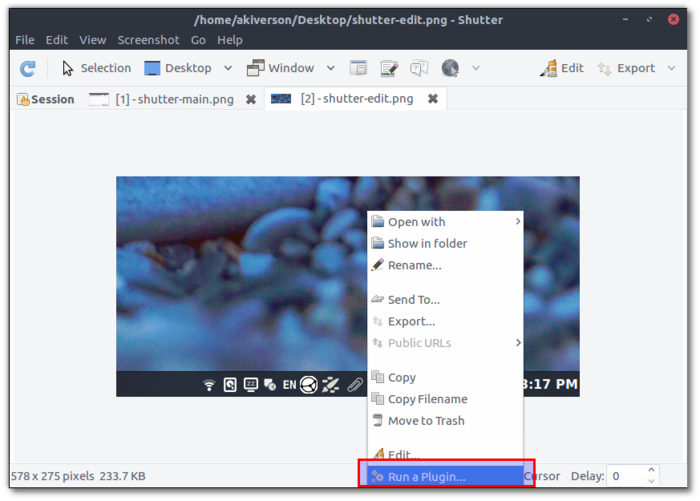
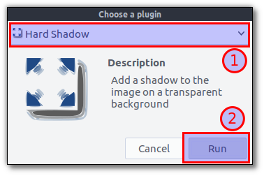
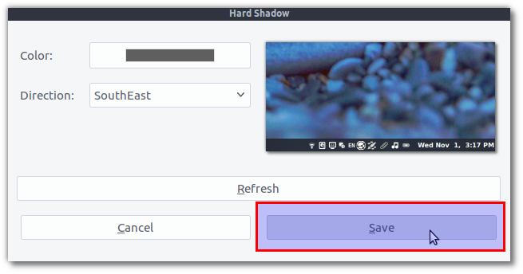
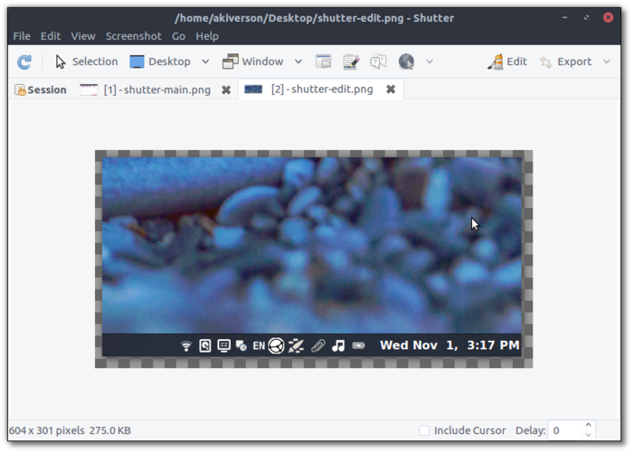
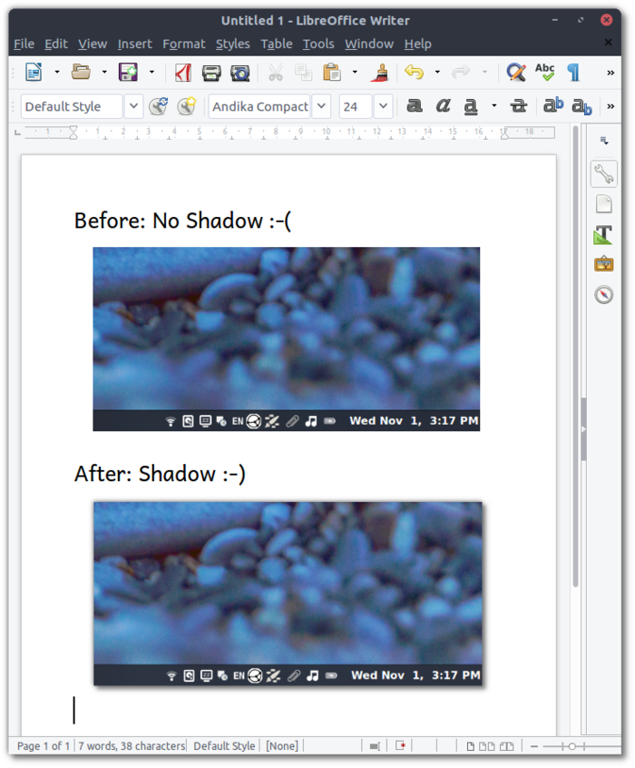

Guidelines for Creating Wasta-Linux Tutorials
Screenshots
Shutter is the application recommended for creating screenshots to use in Wasta-Linux Tutorials. As with most screenshot utilities, you have the ability to screenshot your entire desktop, a specific application window, or a selected area of your desktop.
-
Shutter Main Window

Hilighted above are the basic options for taking screenshots using the Shutter Main Window:
1. Selection: take screenshot of selected area of your desktop
2. Desktop: take screenshot of your entire desktop
3. Window: take screenshot of selected window
4. Include Cursor: Include or exclude cursor in screenshot
5. Delay: select the delay time before taking a screenshot (helpful if you want to choose a specific menu item for the screenshot)
6. Section of window / Tooltip: Shutter even has the ability to screenshot tooltips and menus, which many screenshot utilties aren’t able to do as easily
7. Edit: Shutter includes an integrated graphic editor (see below)
-
Shutter Edit Window

Additionally, Shutter provides the ability to do light editing of screenshot images. Hilighted above are the main features of the Shutter Edit Window:
1. Arrow: Insert an arrow
2. Box: Insert a box
3. Text: Insert text
4. Auto-Increment: insert sequential numbers (as in the screenshot)
5. Crop: Crop the image
You can control the color of the outline as well as the fill color of objects. Note that by default there is a 0,0,255 with a 59 transparency for boxes. This gives a light blue transparent box that will help to hilight the area. For writing text on top of dark images, it is first recommended to place a box on the image with a solid white background (255,255,255, transparency 255) before placing the text.
-
Shutter Plugins
One additional great feature of Shutter is the integrated plugins. You can experiment with these, but I will hilight one of plugin that is recommended for Wasta-Linux screenshots, the “Hard Shadow” plugin.
First, right-click on your image and choose “Run a Plugin….”:

Then, choose “Hard Shadow” from the plugin list and click “Run”:

Keep the default settings in the Hard Shadow Window and click OK:

The shadow is now applied and you are taken back to the Shutter Main Window:

You will now be able to notice the “checkered box” around the outside of the image which indicates the shadow has been applied to a transparent background. When pasting this image into a document, the checkers will not appear, but the shadow will blend into the background of the document:
